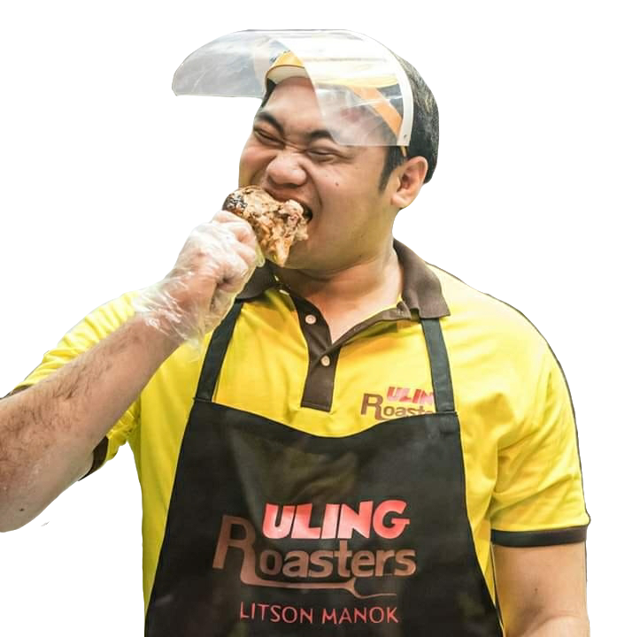

The so called “litsong manok” has been one of the most favorite food for us Filipinos because of its fiery taste! The “Uling Roasters litsong manok” is not just roasted, but it is also packed with different flavors! “Uling Roasters” caters to people who prefer traditional charcoal-roasted chicken.
The “Uling Roasters” company is a part of the Bounty Agro Ventures, Inc. The first “Uling Roasters” branch was officially opened on April 21, 2013 at Zamboanga City. There are at least 300 outlets of “Uling Roasters” branches through Luzon, Visayas, and Mindanao and it still keeps on growing throughout the years.
Known Endorsers:

Ronald Mascarinas is the President and General Manager of Bounty Agro Ventures, Inc. (BAVI) since 2002. Prior to joining BAVI, Mr. Mascariñas served Pure Foods Corporation for 19 years where he started his career and rose through the ranks to Senior Vice President. He capped his career with Pure Foods Corporation as head of three business units: Poultry, Food Service, and president of the Smokey’s fast food chain.
In 2019, Philippine basketball legend and comedian Benjie Paras joined the Uling Roasters family as its first brand ambassador.

He was later joined by 3×3 basketball star Alvin Pasaol.